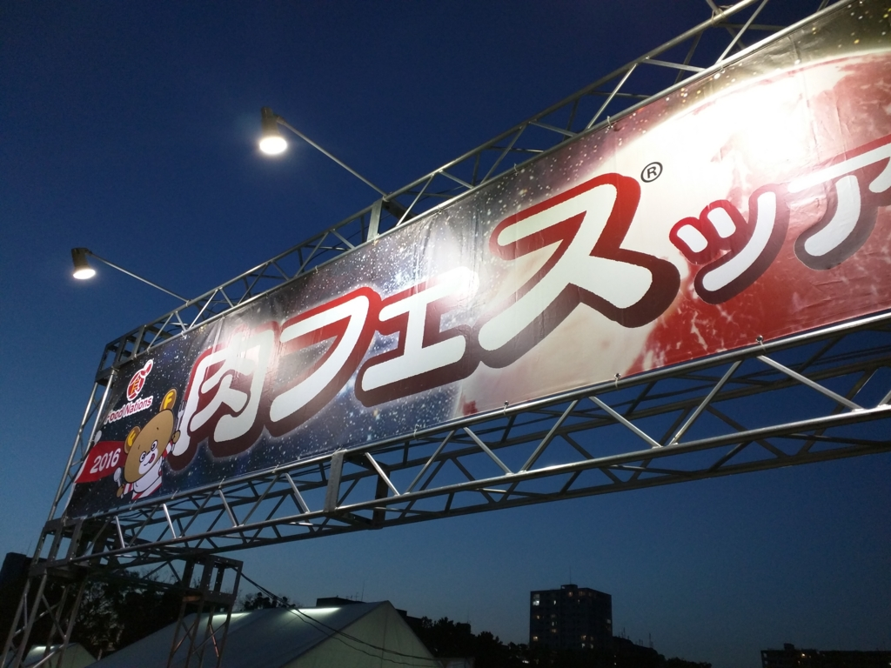
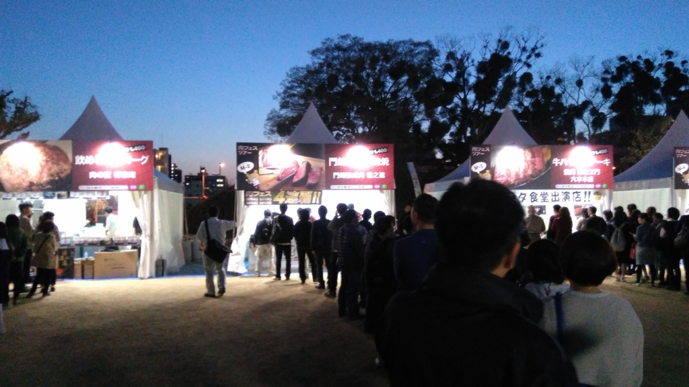
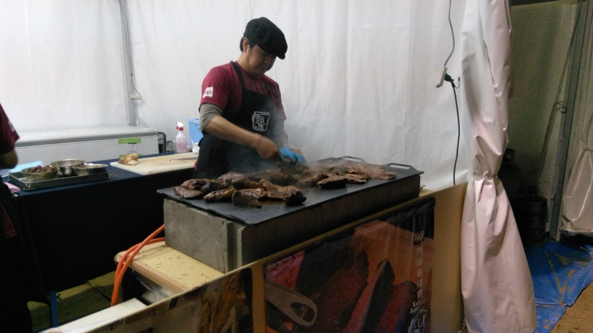
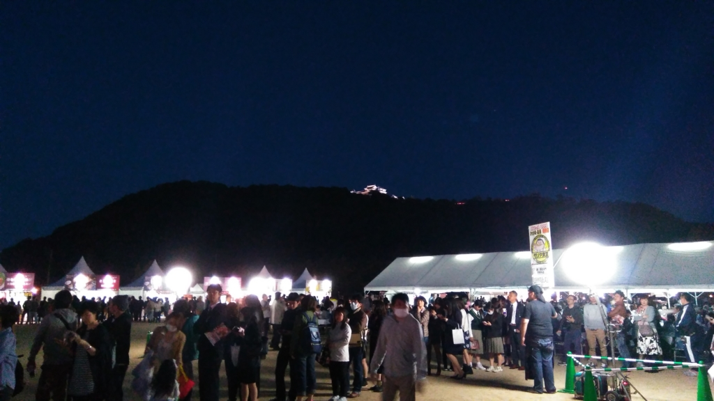

松山城を見上げながら肉食べた。
公開日：

「肉、足りてる？」「足りてませーん！」ってことで、「肉フェスツアー2016松山」に行ってきた。松山城の下、堀之内の公園で開催されてマス。
貧乏一人暮らしの自炊だと、豚肉やら鶏肉やらが精いっぱいでな……。

自分でも知らないうちにテンションが上がっていたせいか、Nexus 6 を落っことして液晶を割ってしまった（修理代は3万円らしい）。なんてこったい／(^o^)＼ﾅﾝﾃｺｯﾀｲ
電子マネー必須……ただし。

全国から選りすぐりのお肉有名店が屋台を出しているっぽい。屋台では現金は使えず、あらかじめ食券を買っておくか（めっちゃ並ばなきゃいけない！）、電子マネーにお金をチャージしておく必要がある。そんなわけで、自分は“いよてつ IC い～カード”に5,000円ぐらい入れて参戦したのだが……「伊予鉄のカードは使えません(;^ω^)」松山なのにひどい話だ。しょうがないので、手持ちの PASMO を「Kumalica」でチェックしてみた。
「よかった、2,200円入ってる……」おばちゃん「心もとないですねｗｗｗ」やかましいわ( ‘д‘⊂彡☆))Д´) ﾊﾟｰﾝ
同行の @ramusara 氏のカードもチェックしてあげると、なかなかの金額がチャージされていたので、二人合わせればビール＋二店舗ぐらいは回れる。

まずは熟成肉のお店に並んで、1人前をゲット。1パック1,400円、一切れ200円の高級肉だけあって、なかなかおいしかった。しっかし、しょうがないとはいえ、クソたけーな！
熟成肉の次はビールを補給して、キジ肉のお店へ突撃。キジのお肉ってあんまり食べたことがないんだが、どんな味なんだろう？
しかし、ここで悲劇が僕たちを襲う。
辛抱強く順番が回るのを待ち、やっとこさ僕たちが買う番になったのに、@ramusara 氏の電子マネーカードが読み取りエラーになる。自分のカードは、熟成肉＋ビールですでにすっからかん。「なぜだ！」「坊やだからさ……」泣く泣く、1皿食っただけで退散する羽目になった。

まぁ、仕方ないね。雰囲気が味わえただけでもいいか。
飲み直した
そのあとは、二人で松山駅周辺の居酒屋を開拓。
割かしいい店 (@ 大黒屋) https://t.co/uFUUr2WYjt
— だるやなぎ（エリス教に改宗） (@daruyanagi) 2016年4月15日
なんか内装がワイルドで素敵な感じの店だった。常連さんが多い店なのかな？ 入って少しの間はギコチナイ雰囲気を感じたけど、そのうち打ち解けて、カウンターで隣になったおじさん・おばさんとも少ししゃべった。またおいでといわれたので、ぜひ遊びに行きたいと思う。
イノシシのお鍋、おいしかった！（写真撮るの忘れた
おまけ
めっちゃゆれてるー
— だるやなぎ（エリス教に改宗） (@daruyanagi) 2016年4月15日
家に帰って、布団に転がり、このつぶやきを残してそのまま眠りに落ちましたとさ。あんなにデカい地震になってるとは……((((；ﾟДﾟ)))ｻﾞｸｸﾞﾌｹﾞﾙｸﾞｸﾞ